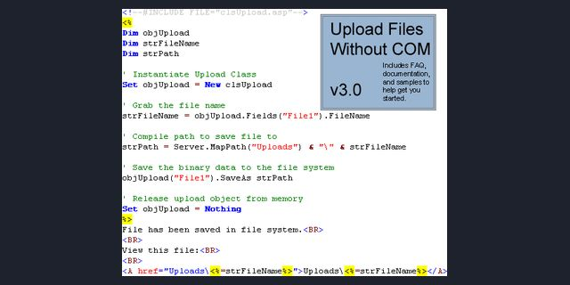

Upload Files Without COM
Classic ASP file uploads, 2001 to 2003

A pure-ASP parser for multipart form uploads, so a site on IIS could accept files without buying a COM component.
Source OpenWiki attachment patch that uses it 2008 evolt.org thread: a developer used it on several client sites My Planet Source Code archive (2000s)
The problem
In 2001, accepting an upload in classic ASP on IIS meant buying a component from one of two companies, about $700, and finding a host willing to install a DLL.
What I built
I read the RFC for multipart form uploads and wrote a parser in plain ASP. It saved files to disk or to a database, for free. Version 1 (1/13/2001) used classes instead of dictionary objects. Version 2 (3/20/2002) was faster, fixed bugs and commented every step. Version 3 (9/1/2003) has an object-oriented interface, saves binary data through ADODB, manages memory so larger files work, shows a real-time progress bar, and comes with a FAQ and a support site.
Hard parts
Parsing raw binary form data with only what a shared host already had, and keeping memory in check for large files.
Results
It was my most famous published code and won an award on Planet Source Code. The OpenWiki project had an attachment patch that used it, and in 2008 a developer on the evolt.org list said they had used it on several client sites.
My role
Author. Three versions: January 2001, March 2002, September 2003.